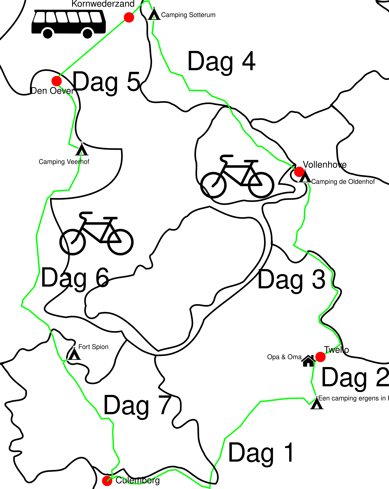

Dit is een reisverslag van de tocht die ik gemaakt heb
van 17 tot 23 april 2022. Ik ben toen vanuit Culemborg
via Twello naar de afsluitdijk gefietst en toen via
Amsterdam weer teruggefietst.

17 april
Ik had de dag van tevoren al mijn spullen al ingepakt, dus aan
voorbereiding hoefde ik die dag niets meer te doen. Die dag zou de rest
van het gezin met de auto naar de camping in Hoenderloo gaan waar onze
starcaravan is en ik zou met de fiets gaan. Ik stond die dag
pas rond 9:00 op. Ik had het paasontbijt met de rest van het gezin en
daarna vertrok ik. Het was die dag heel zonnig, dus ik moest me eerst
nog insmeren en ik nam ook een zonnebril mee. Ik vertrok en fietste
over de dijk richting Rhenen. Ik pauseerde nog even in de buurt van
Elst. Ik werd toen herinnerd aan hoe het was om zulke zware tassen
achterop de fiets te hebben. Omdat mijn bagage zo zwaar was is
fietstandaard vrijwel waardeloos, dus moest je de fiets altijd ergens
tegenaan zetten. Toen ik door Rhenen heen was kwam ik bij een weggetje
waar ik nog nooit eerder over had gefietst. Het liep door de Binnenveldse
Hooilanden een natuurgebied tussen Rhenen en Ede. Dit was een stuk
mooier dan de boerderijen waar ik gewoonlijk langs fietste. Dit zal ik
herrinneren voor wanneer ik weer hier in de buurt fiets. In Ede ging
bij het station onder het spoor door. Toen ik uit Ede was ging ik
richting Otterloo. Dit was een stuk fijner dan door Ede fietsen. Ik
fietste nu door de natuur. Wel was het er best druk, maar dit kwam
waarschijnlijk, omdat het paasweekend was. Na Otterloo was moest ik nog
om de Hoge Veluwe fietsen en toen kwam ik aan in Hoenderloo waar ook
onze camping was. De rest van het gezin was er al. Ik zette mijn tent
op op het veldje op de camping. Ik was nu te groot geworden om met de
rest van het gezin in de caravan te slapen, dus sliep ik in mijn eigen
tent. Het was hier vrij leeg. Dit kwam, omdat de campingdirecteur de
camping had gesloten. Er stond alleen \'e\'en camper. Die avond aten
wij patat en ging de rest Boer zoekt Vrouw kijken. Ik had daar niet zo
veel zin in, dus ging ik piano spelen. Uiteindelijk besloot ik naar bed
te gaan en liep ik naar mijn tent. Om mezelf die nacht warm te houden
had ik een slaapzak, pyjama, Thermo-ondergoed en een matje. Vooral het
matje was belangrijk. Dit had ik een paar weken terug geleerd toen ik
ben gaan kamperen zonder matje. In mijn naiviteit dacht dat ik dat zo
een matje alleen voor het comfort was en dat ik hem dus niet echt nodig
had. Ik kreeg het die nacht ontzettend koud en heb niet kunnen slapen.
Ik hoopte dus dat het met matje beter zou gaan. Het ging inderdaad
beter en ik heb dus best goed kunnen slapen. Op de momenten dat het
toch te koud was deed ik mijn hoofd in mijn slaapzak. Door mijn adem
werd de slaapzak warmer.
18 april
De dag daarna ontbeet en lunchte ik nog met de rest van het gezin en
vertrok daarna naar opa en oma. Dit was maar 25 kilometer, dus het
stelde niet zo veel voor. Wel was het heel mooi weer en zag ik veel
laagovervliegende vliegtuigen. Ik kwam nog vroeg in de middag aan bij
opa en oma. Ik ben nog met oma gaan wandelen. Daarna zijn we gaan eten
waarnaar ik mijn tent in hun tuin opzette. We keken samen nog een documentaire over
NSB-kinderen die in de tweede oorlog voor de Duitsers moesten vechten.
Daarna was het voor mij tijd om naar bed te gaan.
19 april
Ik stond die dag al om half acht op. Ik haalde mijn tent uit elkaar en
liet het drogen. Het was in de nacht namelijk best nat geworden. Ik
douchete en ontbeet en pakte daarna alles in. Oma fietste tot de IJssel
met me mee en zwaaide me daarna uit.